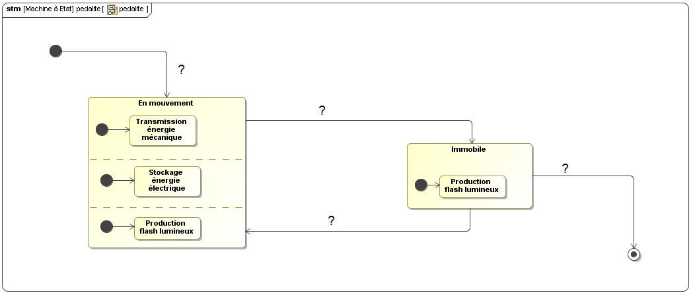

DIAGRAMME D'ETAT
Le diagramme ci dessous décrit l'évolution de l'état de la pédale lumineuse KPL200 en fonction des événements qui peuvent se produire durant son utilisation.

Les événements susceptibles de se produire sont :
o Reprise du pédalage. (1)
o Début du pédalage. (2)
o Après 5 minutes. (3)
o Arrêt du pédalage. (4)
Compléter ce diagramme en plaçant sur chaque transition ( ?), l'événement correspondant. Justifier vos choix.
Created with the Personal Edition of HelpNDoc: Easily create CHM Help documents